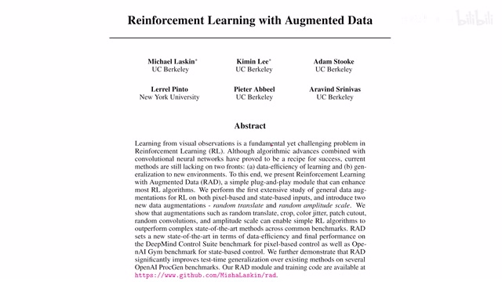
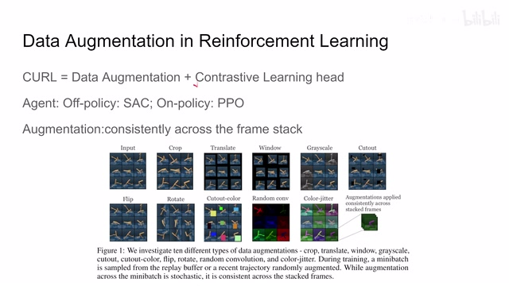
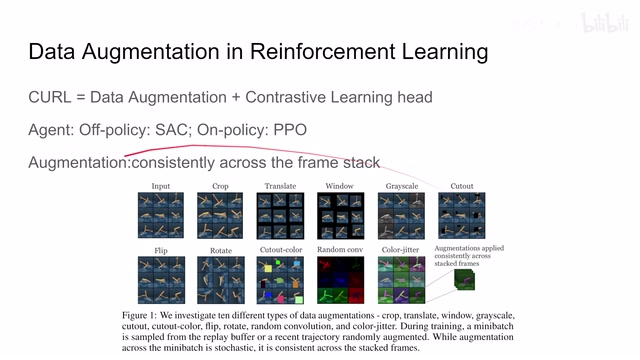
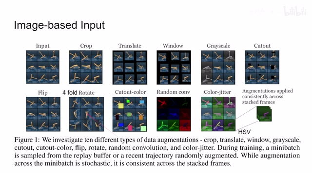
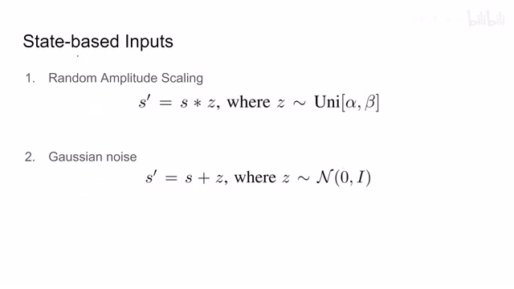
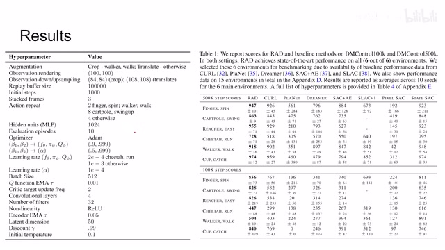
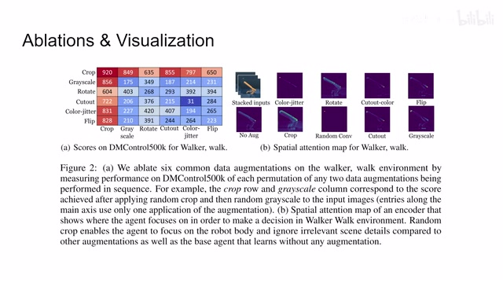

← 返回阅读库 · 原论文目录
论文讲解阅读文档 · 机器人学 · v114
Reinforcement Learning with Augmented Data RAD[2004.14990]
视频时长 00:04:53；讲解文字 2,325 字符；提取讲解画面 9 张。按视频原顺序阅读，每段文字保留时间戳。
文字来自整段视频的自动语音转写，按自然停顿分段，并与 PPT / 论文页面 / 演示画面对齐。未将讲解压缩为摘要；术语、数字和口述公式请结合画面及原论文核对。 阅读稿已校正规范部分明确术语误识别；原始逐字稿和每处修改记录另行保留。
讲解画面为源视频截图（640×360），不是可编辑 PPT 文件。全片按每秒 2 帧扫描内容变化，逐步展开页保留；连续动画保留代表画面。清晰度受源视频限制。
下载完整资料包 · 含离线 HTML、PDF、Word、全部 PPT 画面和字幕。
原论文与材料
Reinforcement Learning with Augmented Data · 下载完整 PDF（22 页）
按时间阅读
00:00:00–00:00:11 · 画面 001

00:00:00–00:00:11 · 画面 001大家好今天我们来快速说一篇论文 reinforcement learning with augmented data 这篇论文就是探讨了几种 data augmentation 在 reinforcement learning 里面的作用那么一个快速的回顾首先我们之前介绍过 CURL 它是用 contrastive learning 这种方法作为一个辅助的任务加上 data augmentation 因为你想做 contrastive learning 不可避免的就要做 data augmentation 它取得了一个好的效果然后 CURL 的作者发现
00:00:11–00:00:54 · 画面 002

00:00:11–00:00:54 · 画面 002如果我们把这个 contrastive learning 去掉呢只保留 data augmentation 的话这个 agent 学得更好了是这个样子于是呢他们就发了这篇文章那我们继续来看他们的配置他主要是研究是 Soft Actor-Critic 作为一种 off policy 的这个方法还有 on policy 的这个 PPO 这个 SAC 我们之前介绍过 PPO 我现在还没看懂以后有机会我们可以聊那么然后呢就开始 augmentation 了对吧我们有这么多 augmentation 的方法
00:00:54–00:00:55 · 画面 003

00:00:54–00:00:55 · 画面 00300:00:55–00:01:24 · 画面 004
00:00:55–00:01:24 · 画面 004那对于我们一个 batch 来说不同的这个 sampledata augmentation 的这个参数可能是不一样的但是对于每一个样本来说比如说在这个 DeepMind Control Suite 这个环境里面它的每一个这个 observation 每一个 state 它是三张图像叠起来的那对于这三张叠起来的图像呢我们应用的这个 data augmentation 的这个方法还有它的参数是一样的这个是我们做这个 augmentation 的时候要注意的一个地方那么我们继续来看这些方法
00:01:24–00:02:39 · 画面 005

00:01:24–00:02:39 · 画面 005其实最主要的就是 crop 和 translatecrop 就是你原来一张大图然后切出一个小的 patch 来比如说 100x100 的图切出 84x84 来 translate 就是你原来一张 100x100 的图你现在给它随机的放到一个 108x108 的这么一个图里那 window 和 cutout 就是你随机在这个图像中选一个方块 window 就保留这个方块 cutout 就把它拿走这个方块相应的 cutout 的 color 就是我拿走这个方块同时呢给它随机塞一种颜色进去那么当然还有其他的方法呢比如说随机的把这个图像变成灰度图各种翻转比如说这个图它是一个左右的翻转的这个水平的翻转这么一个状态然后呢还有这个 rotation 就是 90 180 270 随机的给它转成这些度数所以一共有四种这个旋转的情况
还有一个 random convolution 之前我们也介绍了就是拿一个 convolution kernel 它里面参数是随机的给它卷这张图像还有这个色彩的抖动先转到 HSV 空间做抖动然后再转回来当然还是对于每一个 observation 里面的叠起来的这不同的图像我们做的 augmentation 是一样的那么这个就是在图像输入上做的 data augmentation 当然你也可以把它推广到 state vector
00:02:39–00:03:03 · 画面 006

00:02:39–00:03:03 · 画面 006直接是系统状态数值作为输入的一种情况那这里呢作者也介绍了两种一种呢就是我在一个 uniform distribution 里面随机采一个数来然后把它乘到我们的这个 state vector 上一种那另一种呢就是这个 state vector 上随机加上这个 gaussian noise 那么这就结束了我们继续来看作者的汇报的结果首先是一个 data augmentation 在我们的 data augmentation 环节呢这里呢我们看到除了这个 Walker-walk 用的是这个 crop 只用了这一种 data augmentation
00:03:03–00:03:37 · 画面 007

00:03:03–00:03:37 · 画面 007其他的环境呢都用这个 translate 它就已经能够超过 CURL 之前这些东西就是去掉我们 contrastive learning 这个 loss 呢它学得更好了那当然这个是可以理解的因为原来我们的这个网络需要针对两个 loss 来进行优化现在呢它只需要专注于这个 reward 它不再需要考虑其他的东西所以呢这个任务对于这个网络来说呢更简单了这个呢是一种可能的解释
00:03:37–00:04:53 · 画面 008

00:03:37–00:04:53 · 画面 008那么当然作者还汇报了其他的环境啊这里我们就不一一列举了感兴趣的朋友呢到原文查看那最后呢这里作者还做了这个组合拳就是我用两个 Data Augmentation 来看效果是怎么样的那可以看到呢还是主要起作用的呢还是这个 Random Crop 就是 Translation 这些东西带来的那这边还有一个 Visualization 不同的 Data Augmentation 训练出来的这个网络它重点关注了哪些地方那总的来说呢这是一篇非常简单的文章这么说呢这个 CURL 之前打开了一扇窗把我们的 reinforcement learning 和 self-supervised learning 结合起来这个这篇文章 RAD 啪一下就给它关上了然后呢到后面这个 DRQ 还有这个 DRQv2 他们就挖了坑把这个 CURL 这些东西给它埋起来了基本上呢就是这个脉络
那么在不久的将来呢我们有一个工作呢就是把 CURL 再挖出来给它棺材板上钉了几个钉子再挖回去那么时机合适的时候呢我们会向大家介绍这篇工作好的那么以上就是我对这个文章的一个快速的整理其实没有什么东西里面的一些观察如果你在做这个方向呢你应该很早就知道了那么感谢您的收看再见
00:04:53–00:04:53 · 画面 009
00:04:53–00:04:53 · 画面 009转写与来源说明 · 0 个自动复核提示
保留 11 个原始语音片段，0 个片段触发自动复核提示。提示仅用于定位可能的术语、重复或识别问题，不等于已确认错误。
讲解画面为源视频截图（640×360），不是可编辑 PPT 文件。全片按每秒 2 帧扫描内容变化，逐步展开页保留；连续动画保留代表画面。清晰度受源视频限制。
原视频：paper/合集_2026-10-16_机器人学/[论文简析]Reinforcement Learning with Augmented Data RAD[2004.14990].mp4
SHA-256：ae0a33fe0914f0839e7034e05b40acdeec58914c665945ecb32e5aa90e552a93
全文按视频语音与画面制作。原论文可从上方链接下载；完整资料包保留全文、原始逐字稿、字幕和校对记录。